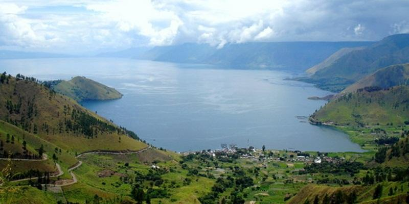

Gunung Sibayak merupakan destinasi wisata alam unggulan di Berastagi yang menawarkan pengalaman petualangan
sekaligus keindahan panorama pegunungan. Dengan ketinggian sekitar 2.212 mdpl, gunung berapi aktif ini terkenal
akan kawah belerangnya yang unik serta pemandangan spektakuler dari puncaknya.
Dikenal sebagai gunung yang ramah bagi pendaki pemula, Gunung Sibayak memiliki jalur pendakian yang relatif
mudah dan dapat ditempuh dalam waktu singkat. Wisatawan dapat menikmati momen matahari terbit yang memukau,
udara sejuk khas pegunungan, serta lanskap alam yang menenangkan. Tempat ini menjadi pilihan ideal bagi pecinta
alam, fotografer, maupun wisatawan yang ingin melepas penat dari hiruk-pikuk kota.
Fasilitas
Transportasi
Tenda camping
Pemandu
Makan 2 kali
Danau Toba

Danau Toba merupakan destinasi wisata unggulan di Indonesia yang terkenal sebagai danau vulkanik terbesar di
Asia Tenggara. Terbentuk dari letusan gunung berapi purba, Danau Toba menawarkan panorama alam yang memukau
dengan perpaduan air danau yang luas, perbukitan hijau, dan udara sejuk yang menenangkan.
Di tengah danau terdapat Pulau Samosir, pusat budaya Batak yang menyajikan keunikan tradisi, seni, dan kuliner
khas daerah. Wisatawan dapat menikmati berbagai aktivitas seperti berlayar di danau, menjelajahi desa
tradisional, hingga bersantai di tepi danau sambil menikmati pemandangan matahari terbit maupun terbenam.
Dengan keindahan alam yang eksotis dan fasilitas wisata yang lengkap, Danau Toba menjadi pilihan ideal untuk
liburan yang menyegarkan sekaligus memperkaya pengalaman budaya.